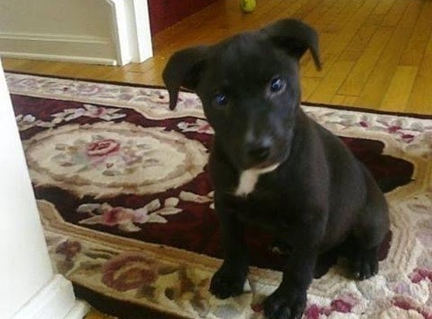

About Puma

Puma's Early Days
Puma was first brought to our house in July 2010 by our father Miguel, he was given a newborn puppy from a family who was moving.
The first couple of weeks were a struggle of having to feed him, potty train him, restless nights. He was a baby!
He was not animal friendly, when he was around 3, first interaction with another dog did not go well. The other dog tried to attack him & Puma ran back home.
Either way, Puma had us to play with and HATED getting wet like rain or bathing but loved to play in the snow!
Puma was quick to eat any food that fell on the floor and would even drink beer! (Modelo/Corona)
Three facts about Puma
- He is half labrador and half shepherd
- He likes to roll in the grass/dirt
- He's always judging us with his side eyes

Puma's Old Days
In August, 2021, we moved to Bealeton, VA from Manassas,VA. We use to live in townhouse with a small fenced front & backyard. Our new house had a big fenced backyard!
Puma was a little scared since he thought we were abondaning him. He would stay near the sliding doors in the back yard.
He wouldn't wonder far from the door, when we would open it, he would run inside where we were. After a week, he realized we were all there
everyday and our furniture was there so he got comfortable and wanted to stay outside everyday like he use to, run around the yard and sunbathe in the grass. It was a relaxing setting for him, being away from a busy neighborhood to a quiet
private cul-de-sac in the woods for his old age. He was in peace for about 2 years with the occasional barking when he saw other animals like wild cats, deers, opossums, and neighbor's dog.
His last week, we fed him whatever food he would like! He ate a Chipotle burrito; Mcdonald's nuggets and McChickens; Chick-fil-a sandwich; Logan's sirloin steak with loaded mashed potatoes, & green beans;
a cheeseburger and hotdog; and his last meal was a McDonald's Big Breakfast with syrup! He loved every bit of that food!